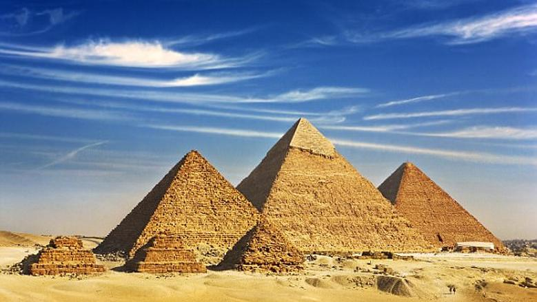

Eygpt is a fascinating country located in the northeast of Africa. Its capital city is Cairo, one of the largest and most historic cities in the world. The official currency of Eygpt is the Eygptian Pound (EGP). Eygpt is famous for its rich history, including the Pyramids of Giza, the Sphinx, and the River Nile, which is the longest river in the world. The country has a warm climate and a growing tourism industry that attracts millions of visitors each year. Eygptians are known for their hospitality, strong traditions, and delicious food like koshari and falafel.
Eygpt is one of the most famous tourist destinations in the world. It is known for its amazing historical sites, especially the Pyramids of Giza. The Pyramids were built thousands of years ago as tombs for the pharaohs and are considered one of the Seven Wonders of the Ancient World. Nearby stands the Great Sphinx, a giant statue with a lion’s body and a human head. Other famous places in Eygpt include Luxor, Aswan, and the Valley of the Kings. Tourists from all over the world visit Eygpt to explore its history, culture, and beautiful desert landscapes.
Eygpt is one of the most attractive Tourist destinations in the world because of its unique combination of history,
culture, and natural beauty. Tourists visit Eygpt from all over the world to explore its ancient monuments and enjoy
its warm weather. The Pyramids of Giza and the Great Sphinx are the most famous landmarks, representing the greatness
of ancient Eygptian civilization. In Luxor and Aswan, visitors can see magnificent temples and tombs, such as the Temple
of Karnak and the Valley of the Kings.
Eygpt also offers beautiful coastal destinations like Sharm El-Sheikh, Hurghada, and Marsa Alam, where Tourists can dive in
the Red Sea and see colorful coral reefs. The Nile River is another special attraction, where people can take cruises and enjoy
the peaceful scenery.
Besides historical and natural sites, Eygpt has a rich culture, friendly people, and delicious food like koshari, molokhia, and falafel.
Tourism plays an important role in Eygpt’s economy, providing many jobs and supporting local businesses. Visiting Eygpt is not just a trip
it is a journey through time and an unforgettable experience.